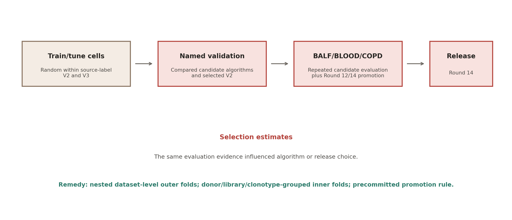
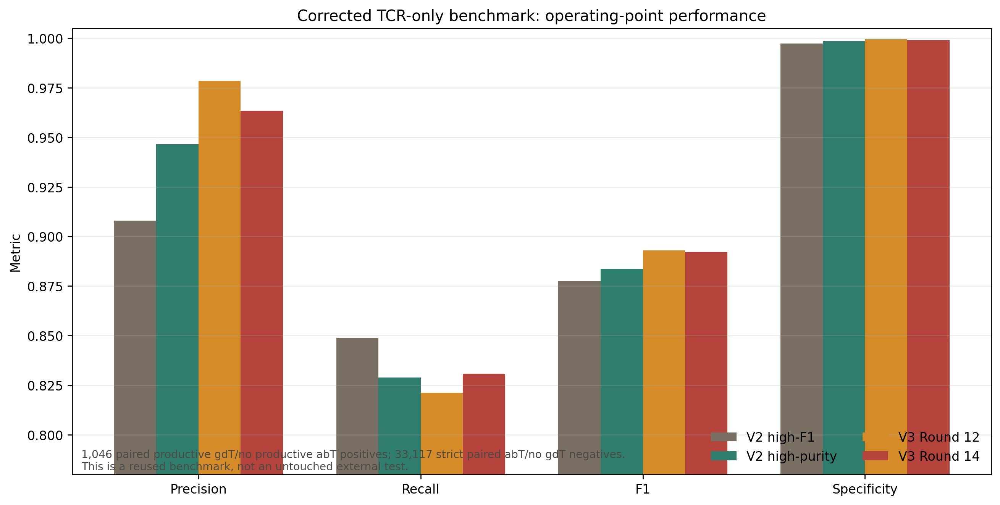
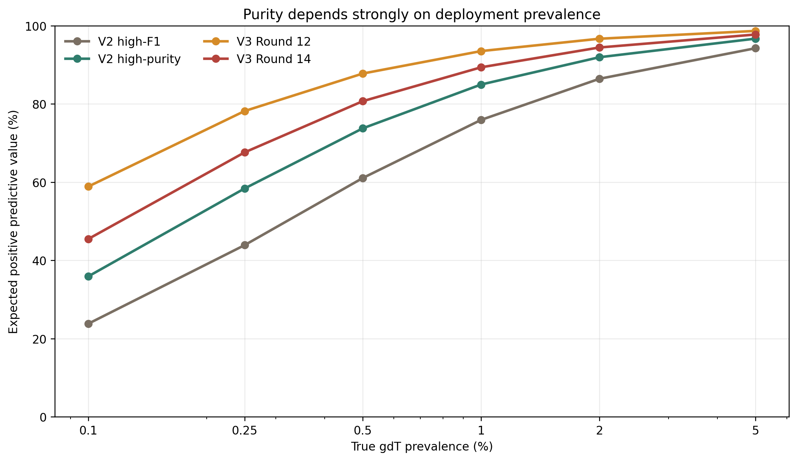
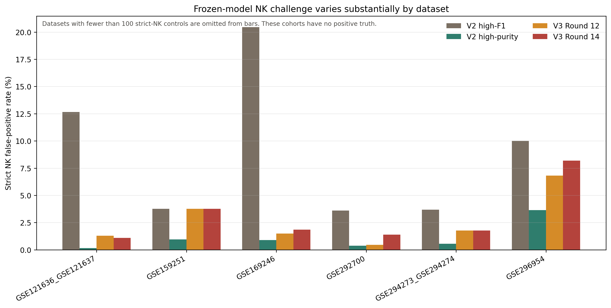

gdTAI training and evaluation audit
Independent methodology review, reconciled against frozen artifacts and executable repository code. Scope: data preparation, labels, feature construction, algorithms, splitting, tuning, evaluation, deployment claims, and reproducibility.
Executive conclusion
gdTAI has real discriminatory signal, but the published internal numbers do not yet rule out selection overfitting. The largest problems are evaluation reuse, cell-level train/tune splits, source-class confounding, and a partly transcriptome-informed external label. These are more consequential than the size of the fitted coefficients.
Independent reviewer result
A separately instantiated read-only reviewer examined the repository without editing files. Its conclusions were then reconciled against the main-agent provenance inventory.
- It independently confirmed both critical defects: V2 validation-based algorithm selection and BALF_BLOOD_COPD reuse in V3 promotion.
- It independently reproduced the corrected TCR-only result: Round 12 F1 0.8929 and Round 14 F1 0.8922, with Round 14 gaining 10 TP but adding 14 strict-abT FP.
- It identified the mixed-run V3 release record, full-atlas candidate selection, extension holdout unsealing, missing gene-completeness guardrails, and absence of grouped uncertainty as additional confirmed issues.
- It agreed that no currently inspected cohort can support a new claim of untouched external validation.
Where evaluation independence was lost

- V2 thresholds were tuned on the tune split, but the final algorithm was selected by F1 on the cohort named validation.
- V3 Round 14 wraps the V2 logistic score with a deterministic TRDC/NK gate; it is not a newly fitted 210-gene classifier.
- Round 12 versus Round 14 promotion used atlas, held-out, and BALF_BLOOD_COPD F1 plus external specificity guardrails.
- Train/tune rows were randomized at cell level within source-label groups, allowing donor/library/clonotype correlations across both sets.
Corrected TCR-only re-evaluation
The existing BALF_BLOOD_COPD predictions were re-scored without changing model outputs. Primary positives are all cells labeled by the source workflow as paired productive TRG/TRD with no productive TRA/TRB, including 98 CD4-like cells previously excluded by expression. Primary negatives are strict paired productive TRA/TRB with no productive TRG/TRD. NK, B, and myeloid annotations are excluded from this primary table and retained conceptually as stress tests.

| Model | TCR gdT | TCR abT | TP | FP | FN | Precision | Recall | Specificity | F1 | PR-AUC |
|---|---|---|---|---|---|---|---|---|---|---|
| V2 high-F1 | 1,046 | 33,117 | 888 | 90 | 158 | 90.80% | 84.89% | 99.73% | 87.75% | 0.904 |
| V2 high-purity | 1,046 | 33,117 | 867 | 49 | 179 | 94.65% | 82.89% | 99.85% | 88.38% | 0.904 |
| V3 Round 12 | 1,046 | 33,117 | 859 | 19 | 187 | 97.84% | 82.12% | 99.94% | 89.29% | 0.918 |
| V3 Round 14 | 1,046 | 33,117 | 869 | 33 | 177 | 96.34% | 83.08% | 99.90% | 89.22% | 0.901 |
Interpretation: Round 12 F1 is 0.8929; Round 14 F1 is 0.8922. The difference is too small, and the cohort too reused, to justify a general superiority claim. Round 14 gains 0.96 percentage points of recall while adding 14 strict-abT false positives.
Recall of TCR-confirmed positives excluded by the old CD4-like rule
| Model | N | Detected | Missed | Recall |
|---|---|---|---|---|
| V2 high-F1 | 98 | 56 | 42 | 57.14% |
| V2 high-purity | 98 | 45 | 53 | 45.92% |
| V3 Round 12 | 98 | 46 | 52 | 46.94% |
| V3 Round 14 | 98 | 55 | 43 | 56.12% |
Library-level stability
| Library | Model | Positive | Negative | FP | Precision | Recall | F1 |
|---|---|---|---|---|---|---|---|
| LIB1 | V2 high-purity | 140 | 4,743 | 8 | 93.55% | 82.86% | 87.88% |
| LIB2 | V2 high-purity | 147 | 4,711 | 13 | 89.52% | 75.51% | 81.92% |
| LIB3 | V2 high-purity | 416 | 12,084 | 15 | 95.97% | 85.82% | 90.61% |
| LIB4 | V2 high-purity | 343 | 11,579 | 13 | 95.61% | 82.51% | 88.58% |
| LIB1 | V3 Round 12 | 140 | 4,743 | 6 | 95.00% | 81.43% | 87.69% |
| LIB2 | V3 Round 12 | 147 | 4,711 | 0 | 100.00% | 73.47% | 84.71% |
| LIB3 | V3 Round 12 | 416 | 12,084 | 6 | 98.33% | 84.86% | 91.10% |
| LIB4 | V3 Round 12 | 343 | 11,579 | 7 | 97.59% | 82.80% | 89.59% |
| LIB1 | V3 Round 14 | 140 | 4,743 | 8 | 93.65% | 84.29% | 88.72% |
| LIB2 | V3 Round 14 | 147 | 4,711 | 5 | 95.76% | 76.87% | 85.28% |
| LIB3 | V3 Round 14 | 416 | 12,084 | 10 | 97.25% | 84.86% | 90.63% |
| LIB4 | V3 Round 14 | 343 | 11,579 | 10 | 96.61% | 83.09% | 89.34% |
Rare-cell deployment changes purity
Sensitivity and specificity were taken from the corrected TCR-only benchmark and projected to plausible deployment prevalence. These are scenarios, not empirical estimates for every dataset.

Expected results at 1% true prevalence per million cells
| Model | Expected TP | Expected FP | Predicted positive | Expected PPV | Expected FDR |
|---|---|---|---|---|---|
| V2 high-F1 | 8,489 | 2,690 | 11,180 | 75.93% | 24.07% |
| V2 high-purity | 8,289 | 1,465 | 9,754 | 84.98% | 15.02% |
| V3 Round 12 | 8,212 | 568 | 8,780 | 93.53% | 6.47% |
| V3 Round 14 | 8,308 | 987 | 9,294 | 89.39% | 10.61% |
Cross-dataset negative-control challenge
The frozen models were recently screened on eight extension cohorts containing 758,135 T/NK cells. They provide useful abT and NK specificity stress tests but no gdT-positive truth, so they cannot support sensitivity or final model promotion.

| Model | Datasets | Cells | abT controls | abT FP | abT FPR | Strict NK | NK FP | NK FPR |
|---|---|---|---|---|---|---|---|---|
| V2 high-F1 | 8 | 758,135 | 338,046 | 1,237 | 0.37% | 72,434 | 10,770 | 14.87% |
| V2 high-purity | 8 | 758,135 | 338,046 | 912 | 0.27% | 72,434 | 525 | 0.72% |
| V3 Round 12 | 8 | 758,135 | 338,046 | 767 | 0.23% | 72,434 | 872 | 1.20% |
| V3 Round 14 | 8 | 758,135 | 338,046 | 962 | 0.28% | 72,434 | 1,242 | 1.71% |
Issue register
Findings are ordered by severity. “Confirmed” means the behavior is directly visible in code or retained artifacts; design risks are explicitly labeled as such.
| Severity | ID / stage | Finding | Consequence | Required action |
|---|---|---|---|---|
| Critical | AUD-01 V2 model selection | The combined cohort named validation was used to accept and select the V2 algorithm. | Reported V2 validation F1 is a selection estimate, not an untouched final-test estimate. | Re-estimate with nested grouped outer folds; reserve model choice and thresholding for inner folds. |
| Critical | AUD-02 V3 promotion | The cohort called independent external was included in Round 12 versus Round 14 guardrails and mean-F1 promotion. | The cohort is no longer independent of model selection, so its metrics are optimistic for generalization claims. | Rename it a reused cross-study benchmark and stop using it for tuning or promotion. |
| High | AUD-03 Train/tune splitting | Within each source-label stratum, individual cells were shuffled into train and tune splits. | Donor, library, and clonotype-correlated expression can appear in both splits and inflate tuning performance. | Group by dataset then donor/library, and by clonotype where TCR clonotypes are available. |
| High | AUD-04 External ground truth | The external gdT label excludes paired productive gdT/no-abT cells using CD4 annotation or CD4 expression, while CD4 is a model feature; external negatives also include expression annotations. | Feature-label circularity can make the benchmark easier and hides performance on CD4-like TCR-confirmed gdT cells. | Use TCR-only labels for primary metrics and report CD4-like, NK-like, and low-CD3 cells as stress strata. |
| High | AUD-05 Validation composition | Large validation components are positive-only cord blood and negative-only GSE254249, linking class to cohort and biology. | A pooled cell-level metric partly measures source/platform separation and is dominated by artificial class composition. | Report within-dataset contrasts, dataset-macro metrics, and leave-one-dataset-out performance. |
| High | AUD-06 Adaptive iteration | Many candidate rounds, thresholds, gates, and post-hoc comparisons repeatedly inspected the same atlas, held-out, and external cohorts. | Repeated adaptive inspection creates selection overfitting even when model fitting never reads the external labels directly. | Pre-register a compact candidate grid and evaluation rule before the next run; keep all decisions inside nested resampling. |
| High | AUD-07 Deployment prevalence | Training/evaluation prevalence is higher and more controlled than deployment prevalence in many T/NK cohorts. | Precision can fall sharply at 0.1-1% prevalence despite specificity near 99.9%. | Publish PPV/FDR curves at realistic prevalence and select operating modes by explicit error costs. |
| High | AUD-08 Positive labels | All cells in sorted gdT datasets are treated as gold positives, including possible contaminants, doublets, and low-quality cells. | Label noise can reward source signatures and penalize biologically valid but weak-expression gdT cells. | Run source-exclusion sensitivity analyses and robust/noisy-label training; do not silently relabel by model features. |
| High | AUD-09 Feature design | Individual TCR V/J genes can encode donor repertoire, clonotype, tissue, and chemistry; stability was not established for the released V2/Round14 coefficients. | Good within-source discrimination may not transfer when repertoire or gene detection changes. | Compare family-level sums, detection indicators, and individual V/J genes using outer-fold stability selection and missing-panel stress tests. |
| High | AUD-10 Full-atlas FP estimation | Hidden abT false positives in non-TCR-sequenced sources are extrapolated from observed paired-abT errors in TCR-sequenced sources. | The estimate assumes exchangeability across studies and does not capture NK or other non-abT errors under domain shift. | Present this as a sensitivity range stratified by dataset/technology, not a single estimated FP fraction. |
| High | AUD-11 Domain-shift challenge | Frozen-model extension cohorts show materially higher and dataset-variable NK/abT false-positive rates than the reused external benchmark. | One pooled external specificity does not describe cross-study deployment risk. | Use dataset-level stress panels and macro/maximum FPR guardrails, while keeping sensitivity evaluation separate. |
| High | AUD-13 Full-atlas candidate selection | V3 candidate selection used full-atlas recall, F1, TRDC/TRDV composition, and estimated FP, even though the full atlas includes training cells. | The atlas-wide performance and composition targets are development criteria, not independent evidence of generalization. | Move every selection criterion into nested outer-fold out-of-fold predictions and treat full-atlas application as post-selection inference only. |
| High | AUD-14 Release provenance | The Round 14 manifest says promoted, its pickle embeds accepted_for_promotion=False and candidate versioning, the completed-run summary selects Round 12, and training-negative counts disagree with methodology. | The artifact checksum is sound, but the promoted build cannot be reconstructed from one internally coherent run record. | Create one immutable release bundle and semantic-consistency test spanning pickle fields, manifest, registry, run summary, command, data hashes, and composition. |
| High | AUD-15 Extension holdout governance | The extension config names sealed holdouts, but screen-manifest loading forces sealed_holdout=False; minimum model-gene completeness is also configured as zero. | Screened cohorts are no longer prospective holdouts, and incomplete gene panels can produce misleadingly confident calls. | Relabel screened cohorts as development stress sets; enforce a gene-completeness floor and abstain when critical genes or sufficient model coverage are absent. |
| Moderate | AUD-12 Reproducibility governance | Model checksums are registered, but frozen manifests do not fully pin input H5AD hashes, split cell IDs, Git commit, package lock, and fold-specific feature selection. | The artifact is verifiable, but exact training reconstruction and leakage auditing are incomplete. | Add immutable run manifests with data hashes, environment lock, split IDs, fold definitions, seed, commit, and output checksums. |
| Moderate | AUD-16 Statistical uncertainty | Canonical comparisons emphasize pooled cell metrics and cell-level paired tests without donor/dataset-cluster confidence intervals. | Large cell counts overstate effective sample size; model ranking may change across donors or datasets. | Report donor- and dataset-macro metrics with clustered bootstrap confidence intervals and worst-dataset guardrails. |
| Moderate | AUD-17 Calibration | Round 14 is a gated probability-like score rather than a calibrated probability, while its threshold was chosen under enriched development prevalence. | A score of 0.936 cannot be interpreted as a 93.6% probability, and fixed thresholds may not transfer across prevalence or chemistry. | Cross-fit calibration inside grouped folds and publish prevalence-specific PPV/FDR plus an abstention state. |
Full evidence paths, certainty labels, and recommended actions are in issue_register.csv.
What can be done without essentially more data
The existing data are sufficient for a much more honest and informative evaluation. The constraint is not sample count alone; it is how independent units, labels, feature selection, and adaptive decisions are handled.
| Priority | Action | Implementation | Why it matters |
|---|---|---|---|
| P0 | Correct claims and freeze comparators | Treat V2, Round 12, and Round 14 as legacy comparators. Rename BALF_BLOOD_COPD a reused cross-study benchmark. | Documentation-only; prevents unsupported independent-validation claims. |
| P0 | Lock the analysis specification | Before rerunning, freeze labels, outer/inner groups, candidate families, feature sets, metrics, guardrails, and promotion rule in a committed config. | Stops further adaptive evaluation leakage. |
| P0 | Rebuild expression-independent labels | Use paired productive gd/no productive ab as positives and paired/single productive ab/no gd as separately reported negatives. Keep transcriptomic flags only as stress strata. | Removes CD4/NK feature-label circularity. |
| P1 | Nested leave-one-dataset-out evaluation | Outer folds hold out complete datasets. Inner folds group donor/library and clonotype when available; preprocessing, feature selection, calibration, and thresholds occur inside inner training only. | Best available honest generalization estimate without new data. |
| P1 | Dataset-balanced learning | Cap or weight each dataset and class so HRA005041 does not dominate. Compare matched within-dataset positives and negatives wherever possible. | Reduces source and prevalence confounding. |
| P1 | Feature-family ablation and stability | Compare regularized logistic models using family sums/detection, individual V/J genes, transcriptome lineage features, and combinations. Retain features stable across outer folds. | Tests whether repertoire-specific V/J signals are portable. |
| P1 | Soft two-stage T-lineage model | Generate an out-of-fold high-sensitivity T-lineage probability, then combine it with the gd-versus-ab score. Do not hard-exclude NK-marker-high or TRDV-dropout cells. | Addresses NK FPs while preserving cytotoxic and dropout-prone gdT cells. |
| P1 | Prevalence-aware calibration and abstention | Calibrate only within inner folds; publish PPV/FDR at 0.1%, 0.25%, 0.5%, 1%, 2%, and 5% prevalence; abstain when critical genes or sufficient panel coverage are missing. | Makes operating modes interpretable in rare-cell deployment and prevents confident calls from incomplete panels. |
| P1 | Failure and robustness panel | Report strict NK, NKT/MAIT, CD8, CD4/Treg, low-CD3, TRDC+TRDV-, doublet/QC proxies, missing genes, 3-prime versus 5-prime, tissue, disease, and source strata. | Surfaces clinically relevant failure modes hidden by pooled metrics. |
| P2 | Uncertainty and model simplification | Use dataset bootstrap confidence intervals and compare the simplest elastic-net/logistic model against gates and trees. Promote complexity only for consistent macro-fold gains. | Controls variance and supports portable deployment. |
| P2 | Leakage diagnostics | Run label permutation within dataset/donor and predict source from candidate features. Large residual performance or source predictability indicates confounding. | Directly tests source leakage using current data. |
| P2 | Immutable semantic release check | Require pickle fields, registry, manifest, run summary, training composition, command, Git commit, environment, and input hashes to agree before promotion. | Makes the selected build exactly reconstructable and catches stale mixed-run metadata. |
Proposed promotion rule for the next iteration
- Primary objective: maximize dataset-macro F1 across outer folds, not pooled cell F1.
- Safety guardrails: report median and worst-dataset strict NK FPR, paired-abT FPR, and recall in every positive source.
- Reject a more complex model unless its outer-fold improvement is consistent and confidence intervals exclude a practically negligible gain.
- Freeze two operating points from out-of-fold predictions: highest F1 and high purity under a prespecified FPR/FDR target.
- After model choice, fit once on all eligible data. Do not present an internal resampling result as a new independent external validation.
Coefficient and feature assessment
The V2 release uses StandardScaler followed by class-balanced logistic regression. Its standardized coefficients range from -1.776 to 1.202; the maximum absolute value is 1.776. That magnitude is not, by itself, evidence of instability. The stronger overfitting concerns are split leakage, source confounding, repeated model selection, and unmeasured feature stability across held-out datasets.
| Feature | Standardized coefficient | Absolute value |
|---|---|---|
| TRAV8-4_log1p_cp10k | -1.776 | 1.776 |
| TRBV12-3_log1p_cp10k | -1.641 | 1.641 |
| TRAV5_log1p_cp10k | -1.486 | 1.486 |
| TRAV1-1_log1p_cp10k | -1.432 | 1.432 |
| TRAV16_log1p_cp10k | -1.411 | 1.411 |
| TRAV6_log1p_cp10k | -1.394 | 1.394 |
| TRAV23DV6_log1p_cp10k | -1.278 | 1.278 |
| TRBV24-1_log1p_cp10k | -1.231 | 1.231 |
| TRBC2_log1p_cp10k | 0.263 | 0.263 |
| TRGV4_log1p_cp10k | 0.281 | 0.281 |
| TRBC1_log1p_cp10k | 0.363 | 0.363 |
| TRDC_log1p_cp10k | 0.446 | 0.446 |
| TRGV9_log1p_cp10k | 0.506 | 0.506 |
| TRDV3_log1p_cp10k | 0.551 | 0.551 |
| TRDV2_log1p_cp10k | 0.803 | 0.803 |
| TRDV1_log1p_cp10k | 1.202 | 1.202 |
Positive TRBC/TRAC coefficients and large individual V/J effects should be treated as prompts for outer-fold stability analysis, not as biological conclusions.
Reproducibility and scope
All registered model artifacts passed SHA256 verification during this audit.
| Model | Status | Bytes | SHA256 prefix | Check |
|---|---|---|---|---|
| gdtai_v2 | reference_release | 16,002 | c7f6e7d1d1c0c8de... | PASS |
| gdtai_v3 | promoted_default | 15,532 | 16dedc0081da9b84... | PASS |
| gdtai_v3_round12 | validated_high_purity_fallback | 808,096 | 7373e79350f7db19... | PASS |
| gdtai_v4 | experimental_not_promoted | 2,200,399 | f7e26ae41c95d3d9... | PASS |
V3 semantic provenance mismatch
- Manifest model/status:
v3_round14_v2_score_trdc_gate_fixed_0p936/promoted_default. - Embedded pickle model/version/acceptance:
v3_round14_v2_score_trdc_gate_fixed_0p936/gdTAI_v3_candidate/False. - Completed-run summary selected
v3_round12_hist_gradient_fixed_0p5, while the canonical path now contains Round 14. - Recorded training negatives: 480,000; methodology statement: 100,000.
Still missing for exact reconstruction: immutable input-data hashes, exact split cell IDs, grouped fold assignments, the Git commit for every historical run, a package/environment lock, and fold-local feature-selection records.
Audit limitation: no unused cohort remains after repeated iteration. The corrected TCR-only analysis improves label independence but does not restore test independence. Nested grouped evaluation is therefore the strongest defensible next estimate available without new data.